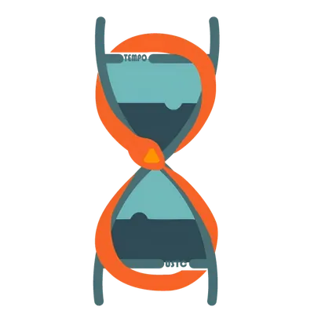

01
Input & protein dynamics
C31 pulses are translated into Integrase and delayed RDF.
Integrase
RDF
C31 input

Live system response
Normalized scale: each chart runs from 0 to its own maximum. Compare timing and shape, not absolute concentration between charts.
C31 pulses are translated into Integrase and delayed RDF.
DNA state should cross once and settle before the next pulse.
Target production turns on in LR and is curtailed by the sRNA branch.